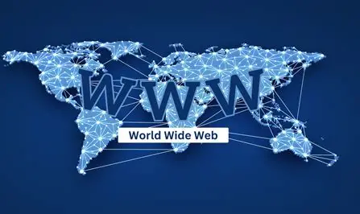

The World Wide Web is a wide-area hypermedia information retrieval initiative that aims to give universal access to a large array of documents. It is one of the most important services provided by the Internet, but it is not the Internet itself. The Internet is the physical network of computers, while the World Wide Web is a service that runs on top of it.

Wide-area: The World Wide Web spans the entire globe, connecting computers and users from every country in the world.
Hypermedia: The Web contains various types of media including text, pictures, sound and video, as well as hyperlinks that connect pages to one another, allowing users to jump between related content easily.
Information Retrieval: Viewing a WWW document, commonly called a web page, is made very easy through web browsers. Browsers allow users to retrieve pages simply by clicking hypertext links or entering web addresses.
Universal Access: It does not matter what type of computer you have, or what type of computer the page is stored on. A web browser allows you to connect seamlessly to many different systems across the world.
The World Wide Web is just one of the many services that the Internet provides. Other services provided by the Internet include email, FTP, Telnet and Usenet. Almost every protocol type available on the Internet is accessible on the Web, including Email, FTP, Telnet and HTTP. The WWW was created in 1989 by Tim Berners-Lee and has had a profound impact on our lives since the 1990s.
The World Wide Web has transformed how we communicate, do business and access information. Companies such as Apple, Amazon, Microsoft and Google have built their entire businesses on web technologies and have become some of the most well-known companies in the world. Today, the Web supports web applications that allow us to manage money, book travel, purchase goods and services, all from a computer or mobile device.